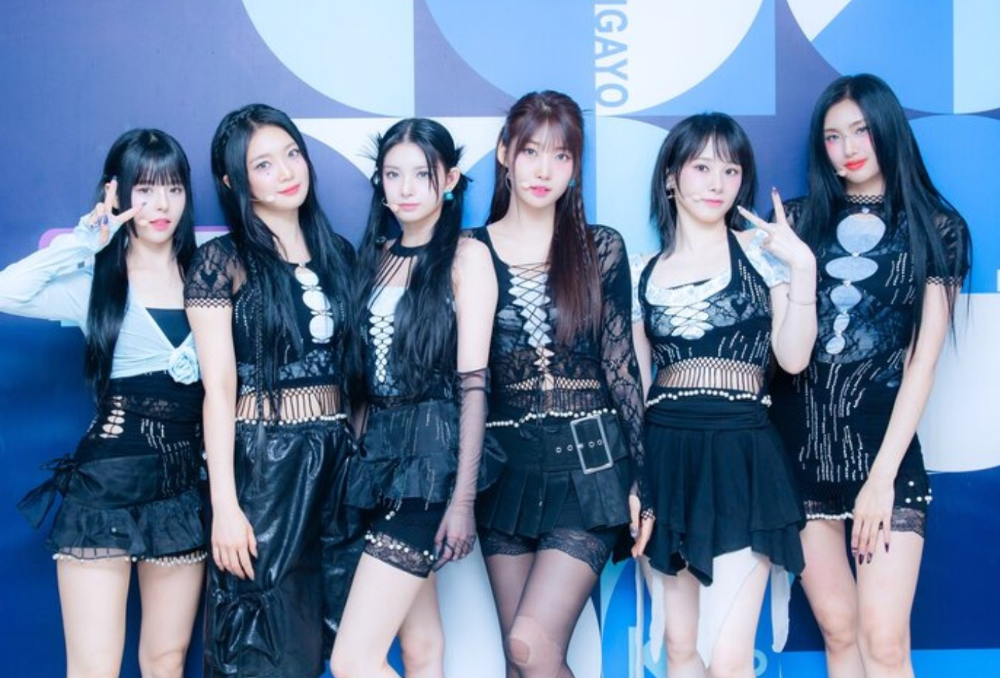

──── ୨୧ ────
Melodify
M√∫sicas escolhidas com amor üéß ‚∏ú(ÔΩ°·µî ·µï ·µî )‚∏ù‚ô°
Avenged Sevenfold
Avenged Sevenfold é uma banda norte americana de heavy metal, fundada em 1999 em Huntington Beach, Califórnia. A banda consiste no vocalista M. Shadows, nas guitarras Zacky Vengeance e Synyster Gates, no baixo Johnny Christ e na bateria Brooks Wackerman. Avenged Sevenfold começou tocando metalcore em seus dois primeiros álbuns, mas após alguns anos a banda mudou seu estilo musical no álbum City of Evil e hoje é considerada uma revelação e um dos maiores nomes do heavy metal dos últimos anos.
Melanie Martinez
Melanie Martinez é uma cantora, compositora, diretora e atriz americana. Melanie se tornou conhecida por suas canções com letras polêmicas e por seu estilo e cabelo de duas cores. Suas letras combinam um lado obscuro com seu jeito super meigo. Ela começou a escrever canções aos quatorze anos, unindo sua admiração pela poesia e pela música. O seu albúm K-12 foi lançado junto ao filme de mesmo nome, escrito e dirigido por Martinez, em 6 de setembro de 2019, através da Atlantic Records.
One Direction

One Direction ou 1D foi uma boyband britânico-irlandesa de música pop formada na cidade de Londres, Reino Unido, em 2010. O grupo era formado por Louis Tomlinson, Harry Styles, Liam Payne, Niall Horan e Zayn Malik. O quinteto foi formado após seus membros participarem do reality show musical The X Factor como competidores solo, até que, durante o programa, a cantora Nicole Scherzinger e o produtor Simon Cowell os uniram para concorrer como um grupo. No total, foram mais de 70 milhões de discos e singles vendidos em todo o mundo, vinte e seis milhões apenas nos Estados Unidos, tornando-se um dos grupos recordistas de vendas a nível global. One Direction já foi indicado para mais de 400 prêmios desde o inicio de sua carreira, vencendo mais de 350 deles.
System of a Down

System of a Down ou SOAD é uma banda de nu metal armênio-americana formada em Glendale, Califórnia, em 1994. Desde 1997, banda é composta pelo vocalista principal Serj Tankian, o guitarrista solo e vocalista Daron Malakian, o baixista Shavo Odadjian e o baterista John Dolmayan, que substituiu o baterista original Andy Khachaturian. . A banda vendeu mais de 12 milhões de discos em todo o mundo, enquanto dois de seus singles, "Aerials" e "Hypnotize", alcançaram o primeiro lugar na parada Alternative Songs da Billboard.
IVE
.png)
Ive é um girl group sul-coreano formado pela Starship Entertainment. O grupo é composto por seis integrantes: Yujin, Gaeul, Rei, Wonyoung, Liz e Leeseo. Ive é reconhecido por suas canções cativantes e exploração de temas de amor próprio. Elas fizeram sua estreia em 1 de dezembro de 2021, com o single álbum Eleven. Desde sua estreia, elas ganharam diversos prêmios, incluindo sete MAMA Awards , dez Melon Music Awards , oito Golden Disc Awards , seis Circle Chart Music Awards, três Seoul Music Awards e um MTV Video Music Awards Japan .
EVERGLOW
Everglow é um grupo feminino sul-coreano composto por seis membros: E:U, Sihyeon, Mia, Onda, Aisha e Yiren, sob a Yuehua Entertainment. Elas debutaram em 18 de março de 2019 com o álbum de estreia "Arrival of Everglow" e a música "Bon Bon Chocolat". O Everglow recebeu o prêmio "Melhor Videoclipe" no Asia Artist Awards de 2021. Eles também foram indicados ao BreakTudo Awards de 2021. Além disso, em 2021, o Everglow também ganhou o "Hot Trend Female Idol Group Award".
Misfits
Misfits é uma banda de punk rock formada por Glenn Danzig em 1977 na cidade de Lodi, Nova Jérsei. A banda já vendeu mais de 5 milhões de cópias em todo mundo. São citados como criadores do estilo horror punk, misturando punk rock e outras influências musicais com temas e imagens de filmes de terror, além de exercer influência em diversas outras bandas de rock e heavy metal em geral.
BTS
BTS, também conhecido como Bangtan Boys, é um grupo masculino sul-coreano formado em 2010. O grupo consiste em sete integrantes: Jin, Suga, J-Hope, RM, Jimin, V e Jungkook, quais co-escrevem e co-produzem grande parte do seu material. O BTS conquistou um total de 319 prêmios ao longo da sua carreira, incluindo 52 Daesangs (prêmios principais). Eles também foram indicados a 485 prêmios. Em 14 de junho de 2022, o grupo anunciou uma pausa programada nas atividades do grupo para permitir que os membros completassem seus 18 meses de serviço militar obrigatório na Coreia do Sul, com uma reunião planejada para 2025. Jin, o membro mais velho, alistou-se em 13 de dezembro de 2022; os outros seguiram em 2023.
BLACKPINK

Blackpink é um grupo feminino sul-coreano formado pela YG Entertainment, composto por Jisoo, Jennie, Rosé e Lisa. O quarteto estreou em agosto de 2016 com o single álbum Square One, que conta com os singles "Boombayah" e "Whistle". Em 17 de setembro de 2023, Blackpink realizou sua última apresentação ao vivo do ano no Gocheok Sky Dome em Seoul. O show foi o último da turnê BORN PINK, que passou pela América, Europa e Ásia.
NMIXX
NMIXX é um girl group sul-coreano formado pela SQU4D, uma divisão da JYP Entertainment. O grupo é composto por seis integrantes: Lily, Haewon, Sullyoon, Bae, Jiwoo e Kyujin. Originalmente um grupo de sete integrantes, Jinni saiu da formação em 9 de dezembro de 2022, por motivos pessoais. Elas estrearam em 22 de fevereiro de 2022, com o single álbum Ad Mare. O nome NMIXX combina a letra "N", que significa "agora" (now), "novo" (new), "próximo" (next), e o desconhecido "n", e a palavra "mix", que simboliza combinação e diversidade, significando "a melhor combinação para uma nova era".
Mitski
Mitsuki Miyawaki (Japão, 27 de setembro de 1990) é uma cantora, compositora e musicista nipo-americana. Mitski lançou por conta seus dois primeiros álbuns, Lush (2012) e Retired from Sad, New Career in Business (2013), enquanto ainda estudava no Conservatório de Música da Purchase College. Durante toda sua infância e parte da adolescência, ela vivia em constante mudança, tendo vivido em treze países diferentes, como Turquia, China, Malásia e República Democrática do Congo, antes de se mudar definitivamente para os Estados Unidos. Mitski diz que ela tinha 18 anos quando escreveu sua primeira canção. Alguns dos seus principais prêmios incluem o AIM Independent Music Award de Melhor Artista Ao Vivo em 2022, e uma indicação ao Grammy Awards. Além disso, Mitski tem sido indicada a outros prêmios e reconhecida por publicações como Pitchfork e Rolling Stone.
Guns N' Roses
Guns N' Roses é uma banda americana de hard rock formada em Los Angeles, Califórnia, em 1985, resultado da fusão entre as bandas locais L.A. Guns e Hollywood Rose. A formação original do grupo era composta pelo vocalista Axl Rose, o baixista Ole Beich, o baterista Rob Gardner e os guitarristas Tracii Guns e Izzy Stradlin. Meses depois, após assinarem com a Geffen Records, a formação "clássica" do grupo contava com Rose, Stradlin, o guitarrista Slash, o baixista Duff McKagan e o baterista Steven Adler. A formação atual inclui Rose, Slash, McKagan, o guitarrista Richard Fortus, os tecladistas Dizzy Reed e Melissa Reese e o baterista Isaac Carpenter. A banda percorreu extensivamente o circuito de clubes da Costa Oeste dos Estados Unidos durante os seus primórdios. A banda foi indicada para Melhor Performance de Hard Rock três vezes, em 1990, 1992 e 1993, e Melhor Box Set em 2019. No geral, o Guns N' Roses recebeu 16 prêmios de 49 indicações.
Bon Jovi
Bon Jovi é uma banda americana de rock, formada em 1983, em Sayreville, Nova Jersey. A formação atual da banda consiste no cantor Jon Bon Jovi, no tecladista David Bryan, no baterista Tico Torres, no guitarrista Phil X e no baixista Hugh McDonald. A banda mantém algumas características do estilo hard rock dos anos 1980 até hoje, mas assimilou influências dos variados estilos surgidos no rock e heavy metal desde o seu álbum de estreia, em 1984. Entre as inúmeras indicações, a banda ganhou 1 Grammy em 2007 por " Who Says You Can't Go Home " com Jennifer Nettles , 2 World Music Awards, 1 Award for Merit em 2004 e 1 Brit Award de Melhor Grupo Internacional em 1996.